When you profile your application, the methods and classes that come up in JProfiler's views often lead to questions that can only be answered by looking their source code. While JProfiler provides a built-in source code viewer for that purpose, it has limited functionality. Also, when a problem is found, the next move is usually to edit the offending code. Ideally, there should be a direct path from the profiling views in JProfiler to the IDE, so you can inspect and improve code without any manual lookups.
JProfiler offers IDE integrations for IntelliJ IDEA, eclipse and NetBeans. To install an IDE plugin, invoke Session->IDE Integrations from the main menu. The installer also offers this action to make it easy to update the IDE plugin along with the JProfiler installation. JProfiler writes a property file into the plugin directory that connects the plugin with the current installation directory of JProfiler. In the IDE plugin settings, you can change the used version of JProfiler at any time. The protocol between the plugin and the JProfiler GUI is backwards compatible and can work with older versions of JProfiler as well.
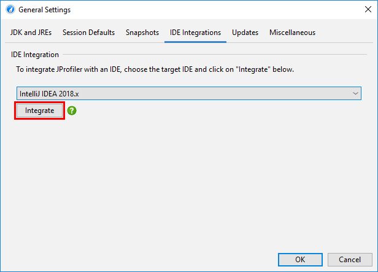
The IntelliJ IDEA integration can also be installed from the plugin manager. In that case, the plugin will ask you for the location of the JProfiler executable when you profile for the first time.
On different platforms, the JProfiler executable is located in different directories. On Windows, it's
bin\jprofiler.exe, on Linux or Unix bin/jprofiler and
on macOS there is a special helper shell script Contents/Resources/app/bin/macos/jprofiler.sh
in the JProfiler application bundle for the IDE integrations.
Everywhere a class name or a method name is shown in JProfiler, the context menu contains a Show Source action.
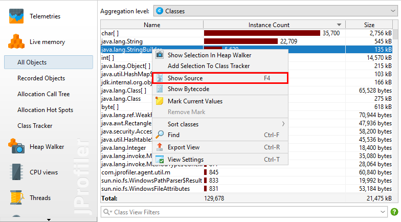
If the session was not started from the IDE, the built-in source code viewer is shown that utilizes line number tables in the compiled class files to find methods. A source file can only be found if its root directory or a containing ZIP file is configured in the application settings
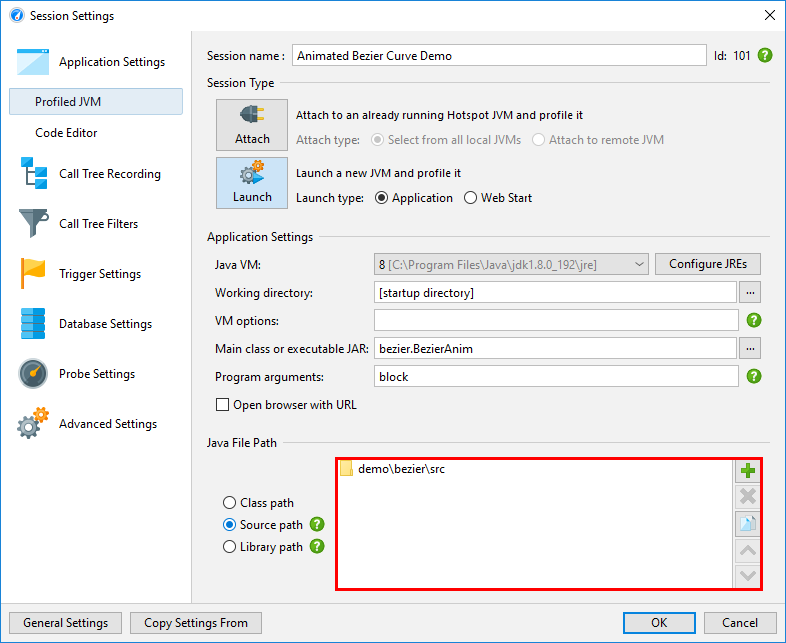
Together with the source code display, a bytecode viewer based on the jclasslib bytecode viewer shows the structure of the compiled class file.
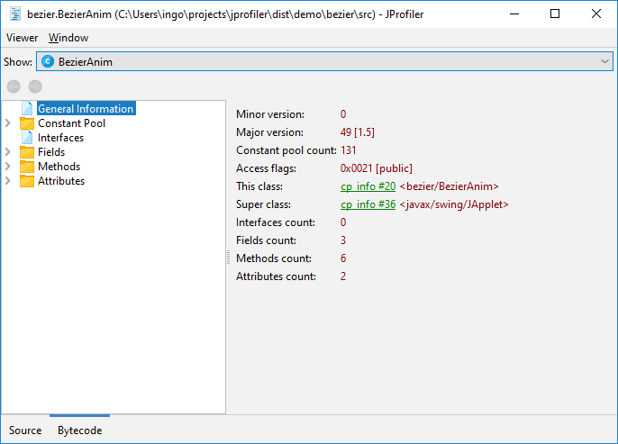
If the session is launched from the IDE, the integrated source code viewer is not used and the Show Source action defers to the IDE plugin. The IDE integrations support launched profiling sessions, opening saved snapshots as well as attaching to running JVMs.
For live profiling sessions, you start the profiled application for the IDE similarly to running or debugging it. The JProfiler plugin will then insert the VM parameter for profiling and connect a JProfiler window to it. JProfiler is running as a separate process and is started by the plugin if required. Source code navigation requests from JProfiler are sent to the associated project in the IDE. JProfiler and the IDE plugin cooperate to make window switching seamless without blinking task bar entries, just as if you were dealing with a single process.
When starting the session, the "Session startup" dialog lets you configure all profiling settings. The configured profiling settings that are used for a launched session are remembered by JProfiler on a per-project or on a per-run-configuration basis, depending on the IDE integrations. When a session is profiled for the first time, the IDE plugin automatically determines a list of profiled packages based on the topmost classes in the package hierarchy of your source files. At any later point, you can go to the filter settings step in the session settings dialog and use the reset button to perform this calculation again.
For snapshots, the IDE integration is set up by opening a snapshot file from within the IDE with the File->Open action or by double-clicking on it in the project window. Source code navigation from JProfiler will then be directed into the current project. Finally, the IDE plugin adds an Attach to JVM action to the IDE that lets you select a running JVM and get source code navigation into the IDE, similar to the mechanism for snapshots.
Sometimes you may want to switch to the IDE without a particular class or method in mind. For that purpose,
the tool bar in the JProfiler window has an Activate IDE button that is shown for profiling sessions
that are opened by an IDE integration. The action is bound to the F11 key, just like the JProfiler
activation action in the IDE, so you can switch back and forth between the IDE and JProfiler with the same key
binding.
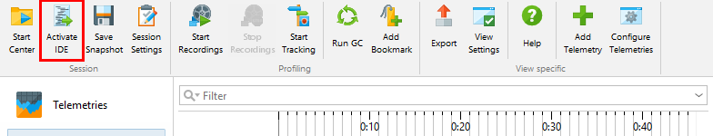
To profile your application from IntelliJ IDEA, choose one of the profiling commands in the Run menu, the context menu in the editor, or click on the corresponding toolbar button.
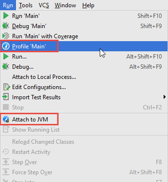
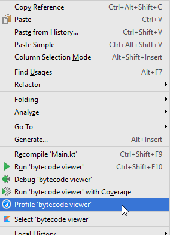
JProfiler can profile most run configuration types from IDEA, including applications servers. To configure further settings, edit the run configuration, choose the Startup/Connection tab, and select the JProfiler entry. The screen shot below shows the startup settings for a local server configuration. Depending on the run configuration type, you can adjust JVM options or retrieve profiling parameters for remote profiling.
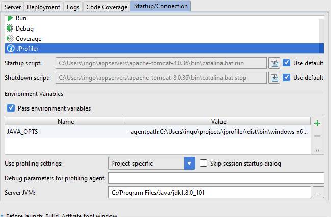
The profiled application is then started just as with the usual "Run" commands. Precise source code navigation is implemented for Java and Kotlin.
On the JProfiler tab of the IDE settings, you can adjust the used JProfiler executable and whether you always want to open a new window in JProfiler for new profiling sessions.
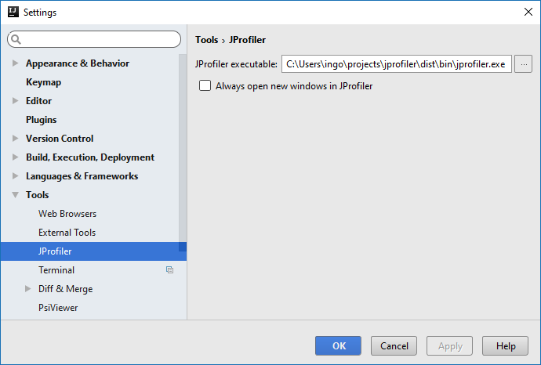
The JProfiler tool window in IDEA is shown when you profile a run configuration from IDEA, when you open a JProfiler snapshot or when you attach to a running JVM.
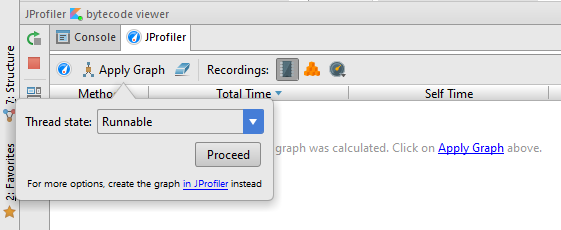
The action in the tool bar with the JProfiler icon activates the JProfiler window. On the right side of the tool bar, several toggle buttons give access to important recording actions in JProfiler. If a recording is active, the corresponding toggle button is selected.
Of particular relevance is the CPU recording action, because CPU graph data can be shown directly in the IDE. The only parameter for graph calculation that is offered in the IDE is the thread status. To configure advanced parameters like thread selection or to use the call tree root, call tree removal and call tree view filter settings from the call tree view, you can generate the graph in the JProfiler window, it will then be shown in the IDE as well.
When you calculate a graph, the list of hot spots will be populated and the source code will be annotated with gutter icons for incoming and outgoing calls. The popup on the gutter icons shows an inline graph, clicking on a method will navigate to it. The list of hot spots shows you interesting entry points for analyzing the graph. When double-clicking on a table row, the source code is shown.
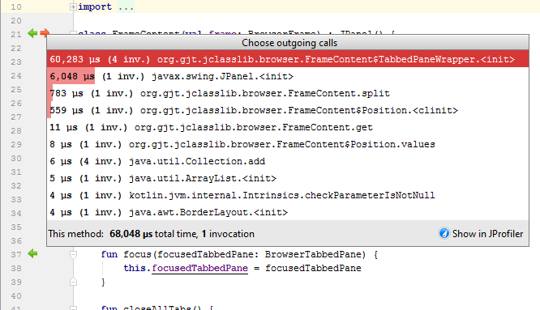
The Show in JProfiler button contains actions that activate the JProfiler window, either the selected node in the method graph or the corresponding call tree analysis in the method graph. For outgoing calls, the "Cumulated outgoing calls" analysis is offered, for the incoming calls, the "Backtraces" analysis is shown. All these actions are also available in the context menu of the hot spot list or as keyboard actions.
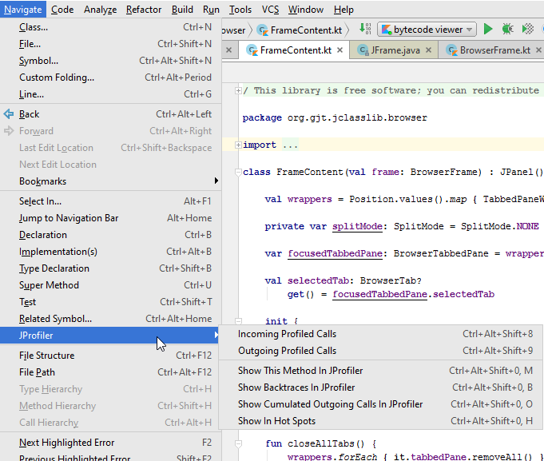
The eclipse plugin can profile most common launch configuration types including test run configurations and WTP run configurations. The eclipse plugin only works with the full eclipse SDKs and not with partial installations of the eclipse framework.
To profile your application from eclipse, choose one of the profiling commands in the Run menu or click on the corresponding toolbar button. The profile commands are equivalent to the debug and run commands in eclipse and are part of eclipse's infrastructure, except for the Run->Attach JProfiler to JVM menu item which is added by the JProfiler plugin.
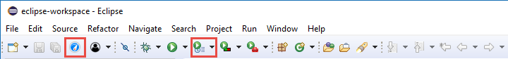
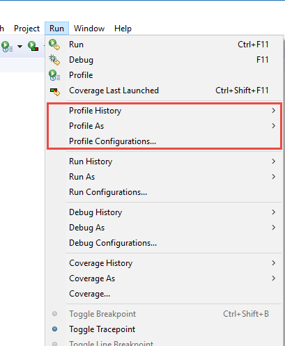
If the menu item Run->Profile ... does not exist in the Java perspective, enable the "Profile" actions for this perspective under Window->Perspective->Customize Perspective by bringing the Action Set Availability tab to front and selecting the Profile checkbox.
Several JProfiler-related settings including the location of the JProfiler executable can be adjusted in eclipse under Window->Preferences->JProfiler.
In NetBeans, you can profile standard, free form and maven projects. For free form projects,
you have to debug your application once before trying to profile it, because the required file
nbproject/ide-targets.xml is set up by the debug action. JProfiler will add a
target named "profile-jprofiler" to it with the same contents as the debug target and will try to modify
the VM parameters as needed. If you have problems profiling a free form project, check the
implementation of this target.
You can profile web applications with the integrated Tomcat or with any other Tomcat server configured in NetBeans. When your main project is a web project, selecting Profile main project with JProfiler starts the Tomcat server with profiling enabled.
If you use NetBeans with the bundled GlassFish Server and your main project is set up to use a GlassFish Server, selecting Profile main project with JProfiler starts the application server with profiling enabled.
To profile your application from NetBeans, choose one of the profiling commands in the Run menu or click on the corresponding toolbar button.
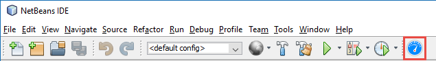
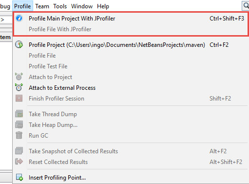